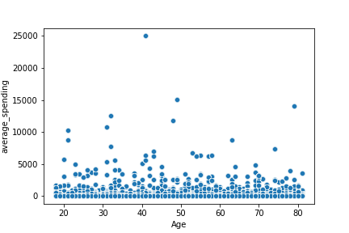
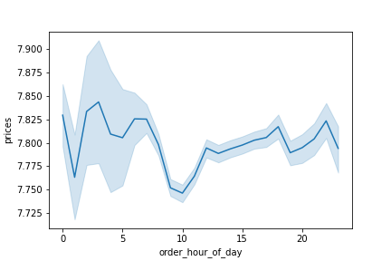
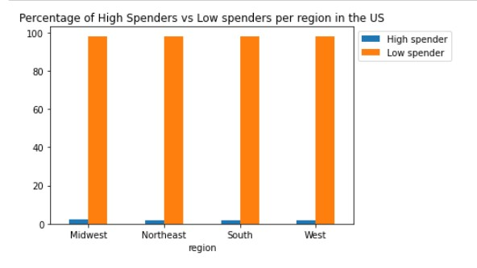

<!DOCTYPE HTML>
<!--
	Editorial by HTML5 UP
	html5up.net | @ajlkn
	Free for personal and commercial use under the CCA 3.0 license (html5up.net/license)
-->
<html>
	<head>
		<title> Portfolio Python </title>
		<meta charset="utf-8" />
		<meta name="viewport" content="width=device-width, initial-scale=1, user-scalable=no" />
		<link rel="stylesheet" href="assets/css/main.css" />
	</head>
	<body class="is-preload">

		<!-- Wrapper -->
			<div id="wrapper">

				<!-- Main -->
					<div id="main">
						<div class="inner">

							<!-- Header -->
								<header id="header">
									<a href="index.html" class="logo"><strong>Carolina</strong> Pachon</a>
									<ul class="icons">
								
									</ul>
								</header>

							<!-- Content -->
								<section>
									<header class="main">
										<h1>Instacart Grocery Online - Python Project</h1>
									</header>

									<span class="image main"></span>
									<h2>Purpose and Context</h2>
									<p>During one of my courses at CareerFoundry, I had a project that introduced me to the world of Python. This project was key because it allowed me to apply my analitical skills for performing exploratory analysis in a very big dataset.</p>
									<h2>Objective</h2>
									<p>Analysing sales patterns, performing exploratory analysis, and deriving insights for a better segmentation for an online grocery store, Instacart. The company is interested in understanding the purchase behavior from their customers, so they could deliver better targeted marketing campaigns. My role as Data Analyst is to give a recommendation.</p>
									<h2>Goal</h2>
									<p>Deliver a final report including tables and visualizations that profile Instacart customers based on their purchase behaviors.</p>
									<h2>Tools, Skills, Methodologies</h2>
									<p>Python and relevant libraries (pandas, NumPy, matplotlib, scipy, and seaborn).</p>
									
									<ul class="actions">
										<li><a href="https://github.com/pachoncarolina/Instacart-Basket-Analysis---Python" class="button primary">View the Project</a></li>
									</ul>
									<hr class="major" />
									<h2>First step- Cleaning Data</h2>
									<p>As a first step I needed to clean the datasets. As with any project, avoiding
										this step might lead into weird or misleading results in your analysis. Python is
										surprisingly good at doing this job and is incredibly fast. This step consisted in
										cleaning 3 data sets (orders, customers and products) was straightforward and
										it followed the classic methodology of ensuring data is in a consistent format,
										there are no unexplained missing values, and there are no duplicated records.</p>
									<h2>Second step- Merging Data</h2>
									<p>This is where things start turning interesting. Once I merged the datasets, I was
										left with a unified version of almost 30M rows and 30 columns! Quite a lot when
										it is your first time trying to handle this massive amount of data. To give you a
										brief idea, this dataset contained information in the orders each user had done,
										the time and date of purchase, the product’s name, the department the product
										belong to, and demographic information from customers (age, income, state,
										family status, number of dependants).</p>
									<h2>Third Step- Segmenting Customers</h2>
									<p>From this step on is where I understood why pandas (the library of Python I
										used for this project) is a better option when dealing with big datasets. Normally,
										in programing languages when trying to categorize something, you need
										to evaluate logical conditions and iterate these conditions to every row in the
										dataset. Doing this is the same as trying to apply a formula to numerous cells
										in Excel and your computer screen freezes. Thanks to the magical <i>loc</i> function
										I was able to segment Instacart customers into 15 different profiles based on
										family status, age, income, and number of dependants.</p>
										<h3>Example of Code to create the segmentation of single customers</h3>
										<div class="col-12"></div>
											<pre><code"># To create the customer profiling for single people, we included 4 subprofiles based on income and age.
# The age and income numbers were determined by the approximate of median calculated before
df_opc3.loc[(df_opc3['fam_status'] == 'single') & 
(df_opc3['Age'] < 38) & (df_opc3['income'] < 85000),'profile_flag'] = 'Single young adult low income'</code></pre>
										


									<h2>Final step- Analysing and Visualizing</h2>
									<p>This final stage of the process is where I extracted most of my future learnings
										and practises from Python. Analysing the data is all about grouping variables
										and applying a statistical criteria. For instance, finding out the average spending
										or the count of orders made by each of the 15 profiles I had suggested in
										the step before.</p>
									</p>Visualizing was tricky. If you used a matplotlib is simple process and the kernel-
										the engine that executes the code- will probably not crush. If instead, if
										you use seaborn, a more specialized library of Python for making statistical
										graphs, then the memory of your computer will reach its limit. Solution? Taking
										a representative sample ( in my case I took 30% of the total population). This
										is particularly important if you want to go deeper into making interesting visualizations.
										At the end, I was lucky to make two graphs, and this was the furthest
										the computational power of my machine could go.</p>
									
										<h4>Some of the visualizations</h4>
										<div class="box alt">
											<div class="row gtr-50 gtr-uniform">
												<div class="col-4"><span class="image fit"></span></div>
												<div class="col-4"><span class="image fit"></span></div>
												<div class="col-4"><span class="image fit"></span></div>
									
									<hr class="major" />
									<h2>Recommendations and Findings</h2>
									
									<p>Despite the challenges encountered and the ones that will remain as future tasks,
										these were the four key outputs extracted from all the data:</p>
										<ul>
											<li>As the company is looking to improve targeting for their ad campaigns it is important to have
												in mind that the most dynamic segments are married customers with more than one dependant
												in regions such as the South of USA. Therefore, any efforts applied to these segments
												should be focused on increasing the average spending per order as opposed to the number
												of orders.</li>
											<li>If the objective is to increase purchases, then is better to target segments such as young
												adults with high income, so they can increase their number of orders.</li>
											<li>It is a good idea that the marketing campaigns start funneling new users into turning them
												into loyal or regular customers by offering lower prices.</li>
											<li>Because the categories of higher rotation are the fast consumer good, perhaps to boost the
												sales of other categories a cross promotion could work well. For example, bananas, which
												is the best selling product across all customer profiles could work to incentivize purchase in
												other products from other departments.</li>
										</ul>
									<hr class="major" />
									
									
									
									
								
									
								</section>

						</div>
					</div>

				<!-- Sidebar -->
					<div id="sidebar">
						<div class="inner">

							<!-- Search -->
								<section id="search" class="alt">
									<form method="post" action="#">
										<input type="text" name="query" id="query" placeholder="Search" />
									</form>
								</section>

							<!-- Menu -->
								<nav id="menu">
									<header class="major">
										<h2>Menu</h2>
									</header>
									<ul>
										<li><a href="index.html">Homepage</a></li>
																														
									</ul>
								</nav>

							

							<!-- Footer -->
								<footer id="footer">
									<p class="copyright">&copy; Untitled. All rights reserved. Demo Images: <a href="https://unsplash.com">Unsplash</a>. Design: <a href="https://html5up.net">HTML5 UP</a>.</p>
								</footer>

						</div>
					</div>

			</div>

		<!-- Scripts -->
			<script src="assets/js/jquery.min.js"></script>
			<script src="assets/js/browser.min.js"></script>
			<script src="assets/js/breakpoints.min.js"></script>
			<script src="assets/js/util.js"></script>
			<script src="assets/js/main.js"></script>

	</body>
</html>